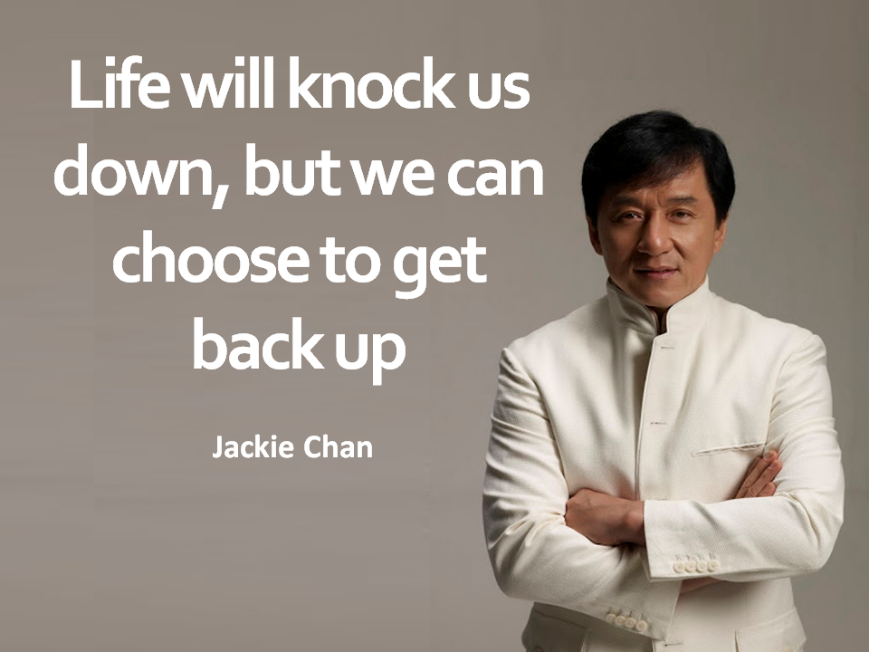

Jackie Chan
Jackie Chan, originally Chan Kong-sang, (born April 7, 1954, Hong Kong), is a Hong Kong-born Chinese stuntman, actor, and director whose perilous acrobatic stunts and engaging physical humour made him an action-film star in Asia and helped to bring kung fu movies into the mainstream of American cinema.
Chan was born to impoverished parents in Hong Kong. The family moved to Canberra, Australia, when Chan was six, but the following year his parents sent him back to Hong Kong to attend a strict boarding school that trained students for jingxi. From age 7 to 17 he studied acrobatics, singing, martial arts, and mime—skills that launched him into a position with a professional tumbling troupe and landed him bit roles as a child actor and, later, as a stuntman.
Chan worked both within the Hollywood system (though he disliked the limitations it placed on actors) and in Hong Kong cinema. In the United States he appeared in such films as Shanghai Noon (2000), The Tuxedo (2002), The Forbidden Kingdom (2008), and The Spy Next Door (2010). Chan starred in a remake of the 1984 action-drama The Karate Kid (2010) and later in the revenge thriller The Foreigner (2017). He did voice work in the computer-animated film Kung Fu Panda (2008).
In addition to acting, Chan pursued a career in the Hong Kong music industry, releasing a number of original albums beginning in 1984. He founded the Jackie Chan Charitable Organization in 1998, which, among other projects, offers scholarships to Hong Kong youths, and he worked as a goodwill ambassador for UNICEF.
The Greatest Jackie Chan Movie List of All Times
- The Legend of Drunken Master (1994)
- Police Story (1985)
- Dragons Forever (1988)
- Project A (1983)
- Project A 2 (1987)
- Rush Hour (1998)
- Mr. Nice Guy (1997)
- Police Story 2 (1988)
- First Strike (1996)
- Shanghai Noon (2000)
Ultimate List Of Jackie Chan Injuries: His Most Painful Wounds And Broken Bones
From a fractured skull to a lacerated eye, here's a chronological list of the most painful Jackie Chan injuries from his career.
- Hand of Death (1975).
Concussion: Jackie hit his head while jumping off a truck. The impact to his head was so hard that he admits crying. Despite the pain, he immediately performed the stunt again and then passed out. Director John Woo initially thought Jackie was dying from his injury until Jackie finally woke up about an hour later. This was his first of several major concussions.
- Magnificent Bodyguard (1978).
Broken Hip
Broken Femur
- Snake in the Eagle’s Shadow (1978). Hand Laceration: Jackie’s hand was inadvertently slashed on camera with a sharp sword. The crew accidentally used a real sword instead of a blunted sword in a fight scene. The shot, complete with Jackie’s real blood, made it into the final edit of the film.
Knocked Out Tooth: Famous for his high-kicks, martial arts expert Hwang Jang-Lee, accidentally kicked out one of Jackie’s teeth. Jackie starts the final scene in the film with a full set of teeth but finishes it minus one.
- Drunken Master (1978).
Broken Eye Socket: Jackie broke his superciliary ridge, the upper eye socket bone near the eyebrow, while on the set of Drunken Master. The serious injury was the result of another accidental kick by Hwang Jang-Lee. The injury almost caused blindness.
Lacerated Eye: In another scene in the film, Jackie’s eye was injured again. This cut made a scar that’s still visible today.
- Dragon Fist (1979).
Broken Nose: Jackie’s nose was accidentally broken during a fight scene. This would be the first of many times that Jackie would break his nose on a movie set.
- The Young Master (1980).
Broken Nose
Injured Throat: Jackie sustained throat injuries so severe during the film that he had trouble breathing.
- Dragon Lord (1982).
Concussion
Broken Jaw: Jackie hurt his lower jaw and chin so badly that he was unable to talk for many of his scenes in the film.
- Project A (1983). Broken Fingers
Broken Tailbone
Severe Neck Injury, Broken Nose: In a homage to Harold Lloyd‘s legendary clock tower scene in Safety Last (1923), Jackie dropped 60 feet (18.29 m) in the air from a clock face to the ground below. He made the drop without any safety gear and only two cloth awnings to break his fall. The stunt severely injured Jackie’s neck and broke his nose. Despite the injury, Jackie finished the scene without medical assistance.
- Police Story (1985). Broken Vertebrae: Jackie fell from the 2nd floor through a decorative garden structure without any padding. The impact broke his 7th and 8th vertebrae.
Laceration: A flying chair hit him directly in the back of his head causing a major laceration.
Second-Degree Burns, Spinal Damage, Dislocated Pelvis: In the final scene of Police Story, Jackie slid down a pole covered with electrical lights. The stunt severely burned his hands causing him to lose control on his slide to the ground below. The impact from his uncontrolled fall seriously injured his back (again) and dislocated his pelvis. The injuries almost caused partial paralysis. An investigation later found that a crew member plugged the lights into the building’s main power source instead of a low-wattage car battery.
- The Protector (1985). Broken Fingers, Hand: Several broken hand bones, fingers of his left hand and injury to his forearm.

See more about the broken bones of Jackie Chan
Back to top